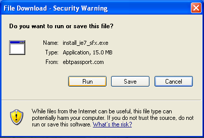
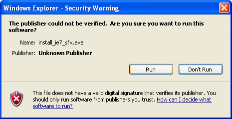

With the upcomming release of the new Passport site, we are making the upgrade also to Internet Explorer version 7. To preform this upgrade please follow the steps below.
Download the upgrade file by clicking HERE.
When prompted select [Run] from the window titled "File Download - Security Warning"

We have created an automatic install process to make this easier for you. After the file downloads press [Run] from the window entitled "Windows Explorer - Security Warning"

After this several things should happen, and the menus should atomatically be controlled by our installer. The install process will take approximately 10 minutes afterwhich you will be asked to restart your computer. At this point you can restart as soon as you do not have customers to deal with.